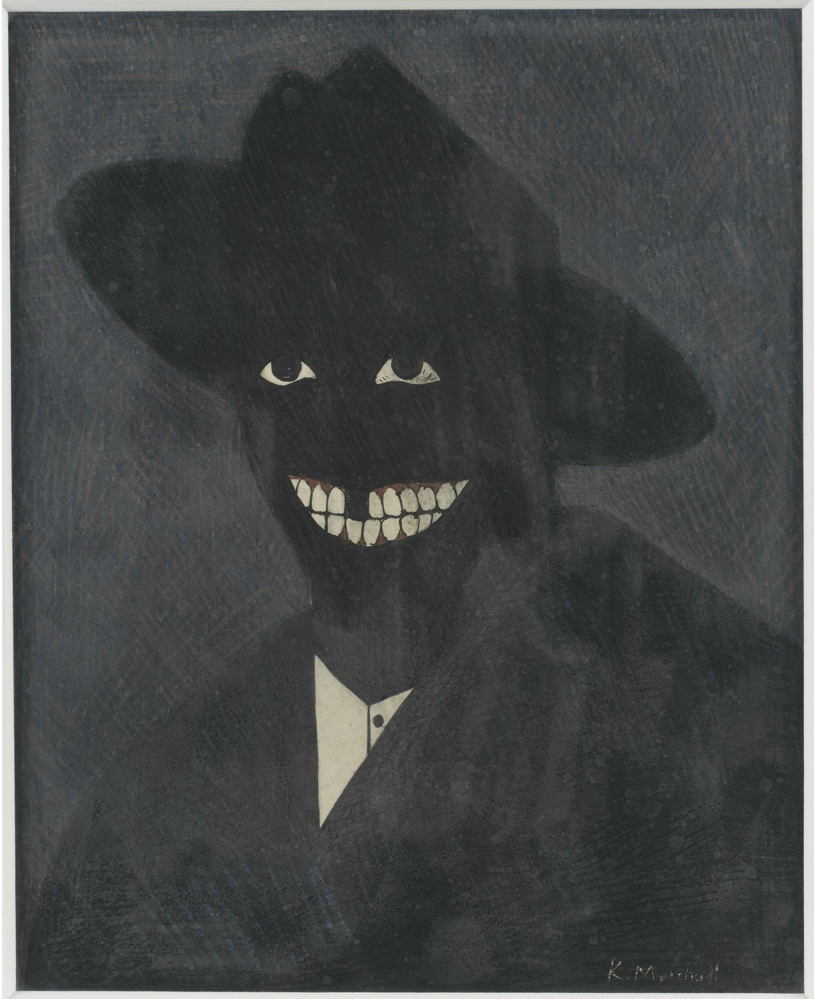

OPACITY
Seeing is believing.
Low Life: Those “not worthy” of being seen. Those who escape archival technologies.
Ocularcentrism: A perceptual and epistemological bias ranking vision over other senses in Western cultures. An example would be a preference for the written word rather than the spoken word (in which case, it would be the opposite of phonocentrism). Both Plato and Aristotle gave primacy to sight and associated it with reason. We say that ‘seeing is believing’, ‘see for yourself’, and ‘I'll believe it when I see it with my own eyes’. When we understand we say, ‘I see’. We ‘see eye to eye’ when we agree. We imagine situations ‘in the mind's eye’. ‘See what I mean?’ (From the Oxford Reference).
"What we have before us is a portrait of a black man by a black man, but one that looks the way a black man might feel about being looked at in a white world by people who see, in the face of a black man, not a person but a shade, a shadow, a pigmentation: blackness."
Seeing is believing.
What does it mean to see? For some, to see = to exist. Thinking of the color black and Kerry James Marshall’s portrait, I am reminded of the Martinican philosopher and poet Édouard Glissant's theory around opacity. For Glissant, Opacity denies complete incorporation and highlights the limits of understanding that come from an inability to fully quantify and identify differences. He argues that in Western thought when trying to “understand” something or someone different, a reduction occurs because all is related back to a norm and an existing system. Instead of using opacity as an assimilation tool, what if we accepted and sat with the confusion.
Seeing is believing.
Perhaps, in Western thought, seeing ends up moving toward the act of re-creating anew or rather, re-creating as is already defined by the system and its own biases and limitations. That is if we see to understand.
"Opacity denies complete incorporation and directs us to ways of being and knowing that are vibrant, untamed, and free-floating. Opacity strives towards an 'opportune obscurity' such that a type of aesthetic autonomy and resistant, black inhabitation can exist."
This form of black inhabitation is the embodiment of a refusal, an embodiment of the glitch. And perhaps, it is also a taking up of space. Tom Vanderbilt, a technology and design writer, in his essay “Darkness Visible” written for Cabinet magazine, writes, “To truly see black would require the loss of any visible light, meaning in fact that all would be black.” And Jared Sexton in his piece “All Black Everything” for e-flux responds, “One sees black and black alone, or one sees everything else without it, we might even say against it. To see black at all is to see all black everything.”
EMBODIMENT
"Skin becomes a surface that materializes black radical presence, and being in one’s skin is but one of many modes of opaque inhabitation, in which the possibilities of political refusal might take shape."
Perhaps there are ways we can both exist with and exist beyond the glitch. I propose moving beyond sight, beyond ocularcentrism, and embracing a more embodied and haptic way of moving through life. What would happen if we embraced our full bodies, not just our eyes, and tapped into the fullness of our sensorial capacities and the technology that we have inherited that has ancestral data already downloaded into both its soft and hardware. This movement would effectively necessitate deep listening, a term coined by composer Pauline Oliveros.
Listening is directing attention to what is heard, gathering meaning, interpreting and deciding on action.
How can we attune our listening to continuously include more and connect more fully to the environment, each other, and world around us? This listening is a listening to learn and requires a full engagement of the body.
To listen this way requires us to be with time differently and find comfort in the delay through a temporary suspension of our own voice and our own judgement.
"Listening, or the interpretation of sound waves, then, is subject to time delays. Sometimes, what is heard is interpreted anywhere from milliseconds, to many years later or never.” - Pauline Oliveros
Body Scan: By mentally scanning yourself from head to toe — many people imagine a laser copier scanning the length of their body — you are bringing awareness to every single part of your body, noticing any aches, pains, tension, or general discomfort. Staying present with and breathing into these sensations can help bring relief to our minds and bodies by evolving our relationship to pain, aches, and discomfort (From Headspace).
Body Scan is a mindful meditation practice that I was recently introduced to that has been instrumental in helping me reconnect with my body especially during this time of remote working, prolonged sitting, and decreased somatic connection with others. The act of scanning myself from head to toe and beyond really resonated with the practice of deep listening mentioned above.
My queer black agender body exists within the glitch, a glitch that causes me to fail and fail and fail again. To be with time, to be with space, and to be with body using tools such as body Scan meditations and deep listening inform me of where I might feel the glitch, where I can direct attention to the glitch, and how I can exist with the glitch in a way that feels expansive and allow me the fluidity and space I deserve.
It’s in the violent gender binary imposed on me against my will that makes my entire body ache. It’s in the epidermis that remembers everytime racial violence was sighted at the skin. It’s in the gut of my belly containing technologies downloaded from ancestors that guide me home that sometime get thrown out of whack from bad bacteria. It’s in my pelvic region that remembers the patriarchal violence inflicted on me because my black queer body was deemed disposable. It’s in the palms of my feet that are sore from restlessly walking the many worlds I inhabit.